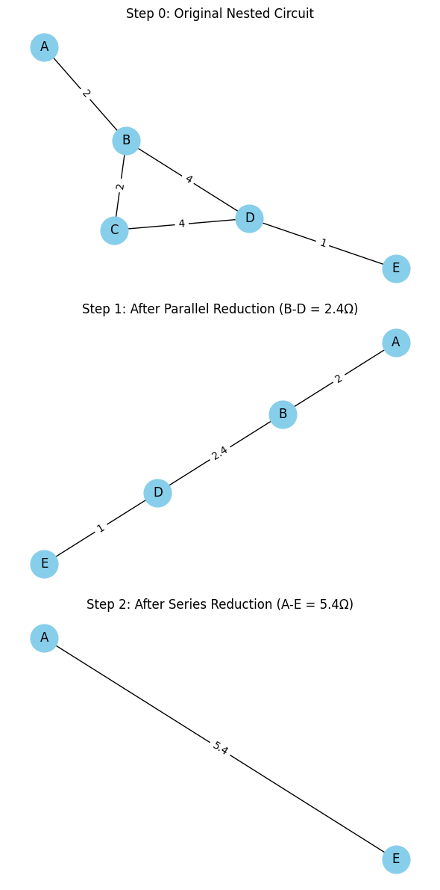
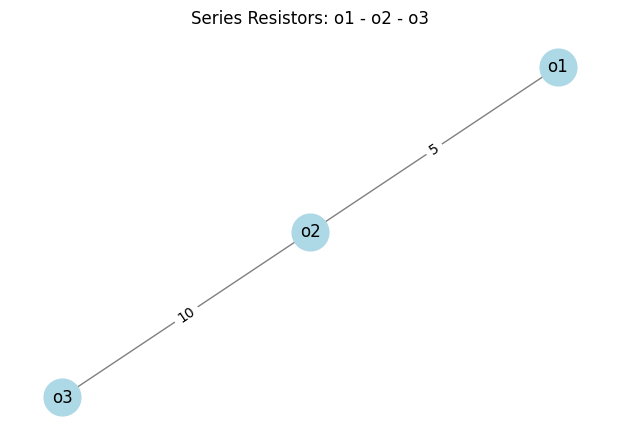
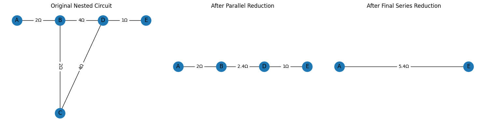

Problem 1
Problem 1
Equivalent Resistance Using Graph Theory with NetworkX
1.1 Motivation
Calculating equivalent resistance is fundamental in circuit analysis and design. As electronic systems grow in complexity—with nested loops, bridges, and multiple branches—manual series/parallel simplifications become error-prone and time-consuming. An automated, algorithmic solution is preferable.
However, designing such an algorithm is a significant challenge. As mentioned in our project briefing:
"We just need to create this damn algorithm... The problem is that we need to visualize it... we need to create a set of graph pictures. It’s kind of absurd, because this problem is too difficult, I think."
That quote highlights two central issues:
- The algorithm must detect, analyze, and automatically simplify arbitrary resistor networks.
- The algorithm must also produce clear visualizations of each step in the simplification process.
1.2 Challenges of Manual Simplification
- Human Error: Complex networks easily lead to omission or misapplication of reduction rules.
- Scalability: Traditional methods do not scale well beyond a handful of components.
- Lack of Automation: Each new circuit requires re-derivation, hindering rapid prototyping.
2. Background Concepts
2.1 Graph Theory Fundamentals
A graph \(G=(V,E)\) consists of:
- Vertices (nodes) \(V\): Represent circuit junctions
- Edges \(E\): Represent resistors, optionally weighted
Graph types in NetworkX:
Graph— undirected, no parallel edgesMultiGraph— undirected, supports parallel edgesDiGraph/MultiDiGraph— directed variants
2.2 Electrical Circuit Basics
- Series resistors: share a single junction → \(R_\text{eq}=R_1+R_2\)
- Parallel resistors: share both end-nodes → \(\frac1{R_\text{eq}}=\frac1{R_1}+\frac1{R_2}\)
- Delta–Y (Star–Delta): transforms triangular loops into trees when no simple series/parallel applies
Why Use Graph Theory?
In electrical engineering, calculating equivalent resistance is essential for analyzing circuits. Traditionally, we simplify circuits by:
- Combining resistors in series (add them)
- Combining resistors in parallel (use the reciprocal formula)
However, for complex circuits, especially those with mixed configurations or multiple loops, manual simplification becomes inefficient or error-prone.
Graph theory provides a structured, programmable approach by modeling circuits as graphs. Our goal is to automate this process.
Core Idea: Model the Circuit as a Graph
A circuit can be seen as a graph:
- Nodes represent junction points in the circuit
- Edges represent resistors between nodes, with resistance as a weight or attribute
This makes it possible to simplify the circuit algorithmically.
NetworkX Graph Types
| Graph Type | Description | Use Case |
|---|---|---|
Graph |
Undirected, no parallel edges | Simple resistor networks |
DiGraph |
Directed graph | Circuits with diodes or flow |
MultiGraph |
Allows multiple (parallel) edges | Circuits with parallel resistors |
MultiDiGraph |
Directed with multiple edges | Advanced cases with flow + parallel |
For circuits, we often use MultiGraph to model parallel resistors.
Visualization of Equivalent Resistance Using Graph Theory
Objective
Use graph theory and NetworkX to simplify a nested resistor circuit into a single equivalent resistance step-by-step, and visualize each transformation.
Step 0: Original Nested Circuit
The circuit consists of:
- A resistor between
A-Bof 2Ω - Two paths from
B → D: - Via
C:B-C(2Ω) andC-D(4Ω) - Direct:
B-D(4Ω) - Final segment:
D-E(1Ω)
Equivalent Resistance: Graph-Theory Reduction Steps
The figure below illustrates the step-by-step reduction of a nested resistor network into a single equivalent resistor.
Figure 1.
-
Original Nested Circuit
-
Nodes: A, B, C, D, E
-
Resistors:
- A–B = 2 Ω
- B–C = 2 Ω
- C–D = 4 Ω
- B–D = 4 Ω
- D–E = 1 Ω
-
After Parallel Reduction
-
Combined the two paths between B and D:
- Path 1 (B→C→D): 2 Ω + 4 Ω = 6 Ω
- Path 2 (B→D): 4 Ω
- Equivalent parallel resistance: $$ R_{BD} = \left(\frac{1}{6} + \frac{1}{4}\right)^{-1} = 2.4\,\Omega $$
-
Remaining resistors:
- A–B = 2 Ω
- B–D = 2.4 Ω
- D–E = 1 Ω
-
After Final Series Reduction
-
The series chain A→B→D→E collapses to: $$ R_\text{eq} = 2 + 2.4 + 1 = 5.4\,\Omega $$
- Final equivalent resistor: A–E = 5.4 Ω
Notes
- Graph-Theory Mapping:
- Nodes ↔ circuit junctions
-
Edges ↔ resistors (with a
resistanceattribute) -
Reduction Rules:
- Parallel: \(R_\text{eq}=\left(\sum \frac{1}{R_i}\right)^{-1}\)
- Series: \(R_\text{eq}=\sum R_i\)
Final Thoughts
This project is not just about solving a numerical problem. As our brainstorming session made clear, the real challenge is:
“...to create an algorithm that will automatically calculate an equivalent resistance of an arbitrary circuit, like arbitrary connected resistors in parallel or in sequence, and our genius algorithm needs to detect it, analyze, and automatically..."
By leveraging graph theory and visualization techniques, we can make even this seemingly "absurd" challenge tractable—and potentially scalable to complex circuit automation.

Visualization of Equivalent Resistance Using Graph Theory
Objective
Use graph theory and NetworkX to simplify a nested resistor circuit into a single equivalent resistance step-by-step, and visualize each transformation.
Step 0: Original Nested Circuit
The circuit consists of:
- A resistor between A-B of 2Ω
- Two paths from B → D:
- Via C: B-C (2Ω) and C-D (4Ω)
- Direct: B-D (4Ω)
- Final segment: D-E (1Ω)


Equivalent Resistance: Graph-Theory Reduction Steps
The figure below illustrates the step-by-step reduction of a nested resistor network into a single equivalent resistor.
Figure 1.
1. Original Nested Circuit
- Nodes: A, B, C, D, E
- Resistors:
- A–B = 2 Ω
- B–C = 2 Ω
- C–D = 4 Ω
- B–D = 4 Ω
- D–E = 1 Ω
- After Parallel Reduction
- Combined the two paths between B and D:
- Path 1 (B→C→D): 2 Ω + 4 Ω = 6 Ω
- Path 2 (B→D): 4 Ω
- Equivalent parallel resistance:
\(R_{BD} = \bigl(\tfrac1{6} + \tfrac1{4}\bigr)^{-1} = 2.4\,\Omega\) -
Remaining resistors:
- A–B = 2 Ω
- B–D = 2.4 Ω
- D–E = 1 Ω
-
After Final Series Reduction
- The series chain A→B→D→E collapses to:
\(R_{\rm eq} = 2 + 2.4 + 1 = 5.4\,\Omega\) - Final equivalent resistor: A–E = 5.4 Ω
Notes
- Graph-Theory Mapping:
- Nodes ↔ circuit junctions
-
Edges ↔ resistors (with a
resistanceattribute) -
Reduction Rules:
- Parallel: \(R_{\rm eq}=\bigl(\sum\tfrac1{R_i}\bigr)^{-1}\)
- Series: \(R_{\rm eq}=\sum R_i\)
Use this workflow to automate equivalent-resistance calculations for larger, more complex networks.